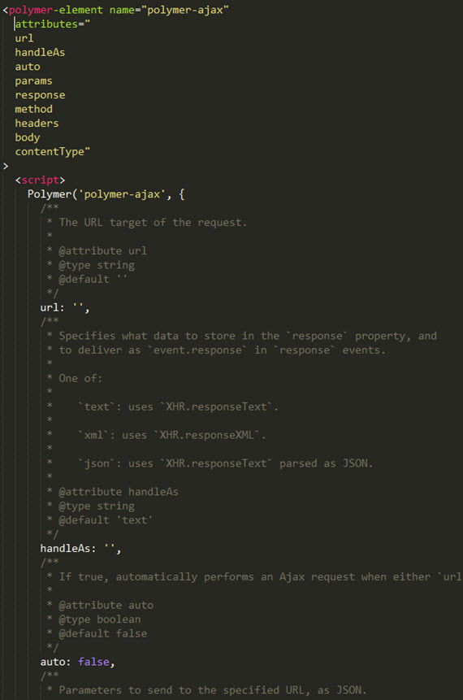
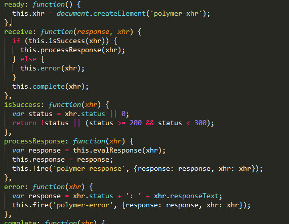
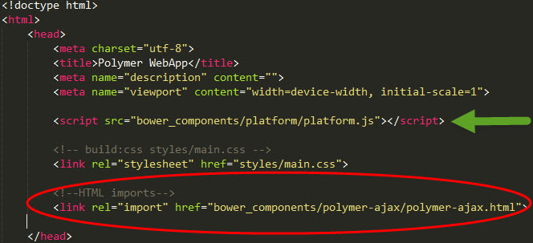
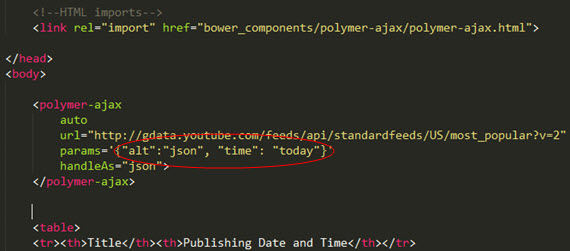
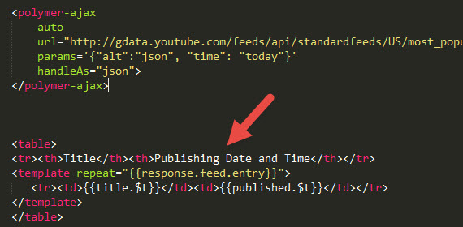
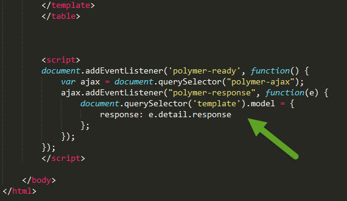
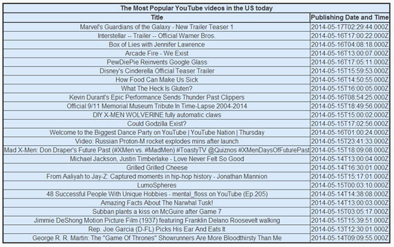
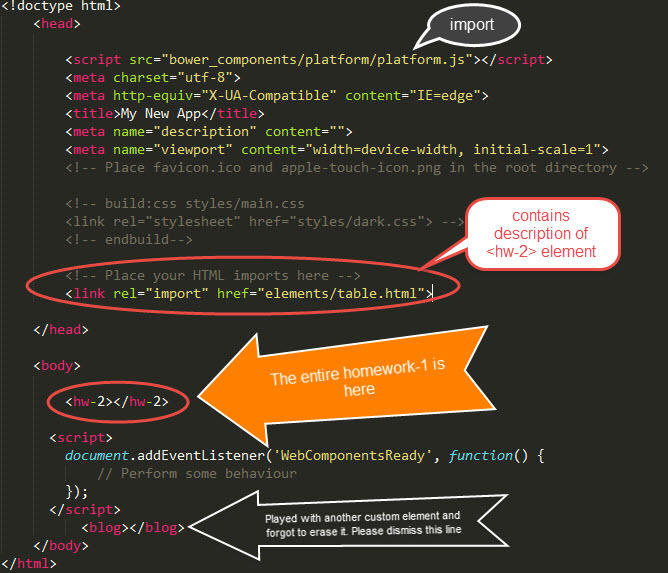
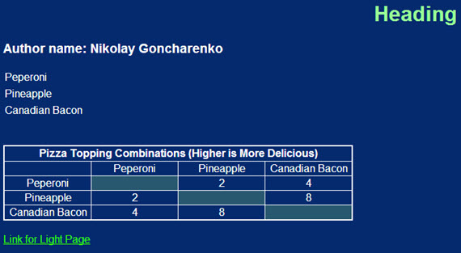

Technology of the future: everything is an element
My How-To-Project is devoted to building of new generation web applications using Polymer. Polymer is a new web user interface (UI) framework that is currently developed by Google.The idea behind the polymer project is encapsulation of code inside of custom elements that can be reused and either extended, or customized later. It brings true OOP techniques in the web development. Please watch the video below to get basic idea of the project.
Please follow to the main page of the Polymer Project for installtion directives. Here, I would like to uncover crucial stages that are not very clear in the installation guide and may prevent a potential a user from succesfully using the framework.
To perform XMLHttpRequests, <polymer-ajax> element is getting very handy.
Please read documentation about this element
here
and install it using Bower.
However, I prefer to read documentation inside the polymer-ajax.html since
it provides the full description of the element atributes, parameters and
methods. See the provided atributes below.

If you go lower inside the file you'll see that as soon as the element ready, it
creates instance of another element called <polymer-ajax> that actually
makes the XMLHttpRequestand is imported into <polymer-ajax> through HTML import.

Now, when you know the documentation, let's use the <polymer-ajax> element
to find out the most popular YouTube videos in the US for today. To do this let's
first do HTML import of the downloaded <polymer-ajax> element:

Also, note that the platform.js is imported before import of polymer-ajax.html.
Now you are ready to add <polymer-ajax> and do XMLHttpRequest. You need to insert the element and define the atributes. If you follow the link for
YouTube API v2.0 – Video Feed Types,
you will find the url feed for most popular videos. Usually, it's
not permitted to make XMLHttpRequest the request using ajax call on another server;
however, we request not for ".json" but for the "json-in-script" that is decoded using
call back function. We don't see it since it happens internally in <polymer-xhr>
element. Therefore, we use "json" as value of "alt" parameter.

The next step is retrieving data from the feed. I ended up finding
feed varibales here. I chose the following parameters
in the feed: title.$t and published.$t. $t is used to invoke the variables
in google feeds. One of the great feature of the <template> element is that
you can use it for data binding and traversing through either object or array.
You can use it to traverse through "response.feed.entry" object as described below:

The last step is writing a script that fires polymer-element event and responds
on it like in the example in polymer documentation. The first line of the script
provides reigistration of the event listener on the DOM Document when polymer
element is ready. <polymer-ajax> element is aiisgned to var ajax on the second line.
On the following lines, it responds to the event it fires and identifies the event with the model data used to generate the template instance to update the model data as
described
here.

As a result of our hard work, we get the following table.

Please see below screenshots of hw-2 as one element.

